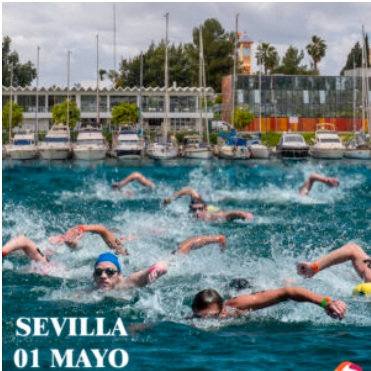

Travesías a Nado - Aguas Abiertas
Eventos de travesías por Fechas
Ningún evento registrado en 2022
III Travesía de Invierno - Día de Andalucía
Marbella
01 de Marzo de 2026

Marbella - Playa del Cable
Campeonato de Andalucía de Aguas Abiertas 2026
Sevilla
01 de Mayo de 2026

Sevilla
*Finalizado
Información del evento:
Travesía a Nado Ardales, Caminito del Rey
Ardales
06 de Junio de 2026

Ardales
*FINALIZADO
Información del evento:
Distancias: 200 (infantil) / 800 / 1500 / 2500 / 5000
Travesía a Nado Nerja
Nerja
21 de Junio de 2026

Nerja
II Travesía Brazadas Solidarias & Saca la lengua a la ELA
Vélez Málaga
21 de Junio de 2026
Vélez Málaga
VI Travesía a nado Paso de los Atunes
Conil
11 de julio de 2026
Conil
Pendiente
Información del evento:
Distancias (500, 1.500 y 3.000 metros
XI TRAVESÍA BRAZADAS SOLIDARIAS CHICLANA
CHICLANA
19 de julio de 2026
CHICLANA
Pendiente
Información del evento:
Distancias: 1.000 metros y 2.500 metros (con salida a las 10:00 horas).
9 Travesía a Nado Virgen del Carmen Coronada
Estepona
26 de Julio de 2026
Estepona
Finalizado
Información del evento:
Hora: 11:00 Lugar:Playa de la Rada Estepona
TRAVESÍA SALOBREÑA
SALOBREÑA
26 de Julio de 2026
SALOBREÑA
Travesía a Nado Ricón de la Victoria
Rincón de la Victoria
08 de Agosto de 2026

Rincón de la Victoria
Pendiente
Información del evento:
Fecha: 08-08-2026 10:00 - 11:30 horas
Distancias: 2.500 m (12:00 horas)- 800 m (13:00 horas)- 300 m.
Travesía a Nado Puerto de Málaga
Málaga
09 de Agosto de 2026
Puerto de Málaga
Pendiente
Información del evento:
Fecha: 08-08-2026 1Km.
9:00-09:30 h: Recogida de gorro, rotulación en el brazo y recogida chip para la 1ª salida
09:30:10:00 h: Recogida de gorro, rotulaciónen el brazo y recogida chip para la 2ª salida.
10:05 h: Cierre de boxes.
10:15 h: Horario de la primera salida
6 Travesia a nado Ciudad de Marbella
Marbella
22 de Agosto de 2026
Playa del Cable
Pendiente
Información del evento:
Distancias: 100, 350 1.300, 2.400 metros
Travesia a Nado Feria San Miguel
Torremolinos
29 de Agosto de 2026

Torremolinos
III Travesía a nado María de Valdés
Fuengirola
29 de Agosto de 2026

Fuengirola
TRAVESÍA LA HERRADURA
La Herradura
06 de Septiembre de 2026

La Herradura
XV TRAVESÍA A NADO RC MEDITERRÁNEO MEMORIAL TOMÁS GARCÍA ZAMUDIO
Málaga
19 de Septiembre de 2026

Málaga
Pendiente
Información del evento:
Distancias: 2.500 metros y 600 metros
TRAVESÍA SOLIDARIA ALIQUINDOI
Málaga
04 de Octubre de 2026

Málaga
Pendiente
Información del evento:
Fecha: 04-10-2026 10:00 horas
Provincia : MÁLAGA
Localidad : PLAYA LA MISERICORDIA
Distancia : 1500M / 3000M


Con el Patrocinio de la Diputación Provicial de Málaga
Se informa que de la Excma. Diputación de Málaga, los deportistas:
- Luis Barbero, Julia Fernández, Manuel Guerrero, José Macías Arquillo, Jorge Otalecu
han sido beneficiarios de una subvención concedida en el marco de la convocatoria en régimen de concurrencia competitiva destinada a “Deportistas de la provincia de Málaga que compitan, individualmente o por pareja.
Esta ayuda les permitirá seguir superándose en la vida a través del DEPORTE.
Enhorabuena a nuestros deportistas y gracias a la Diputación de Málaga
Calendario de Eventos, Actividades Deportivas y Lúdicas
Calendario Ampliado